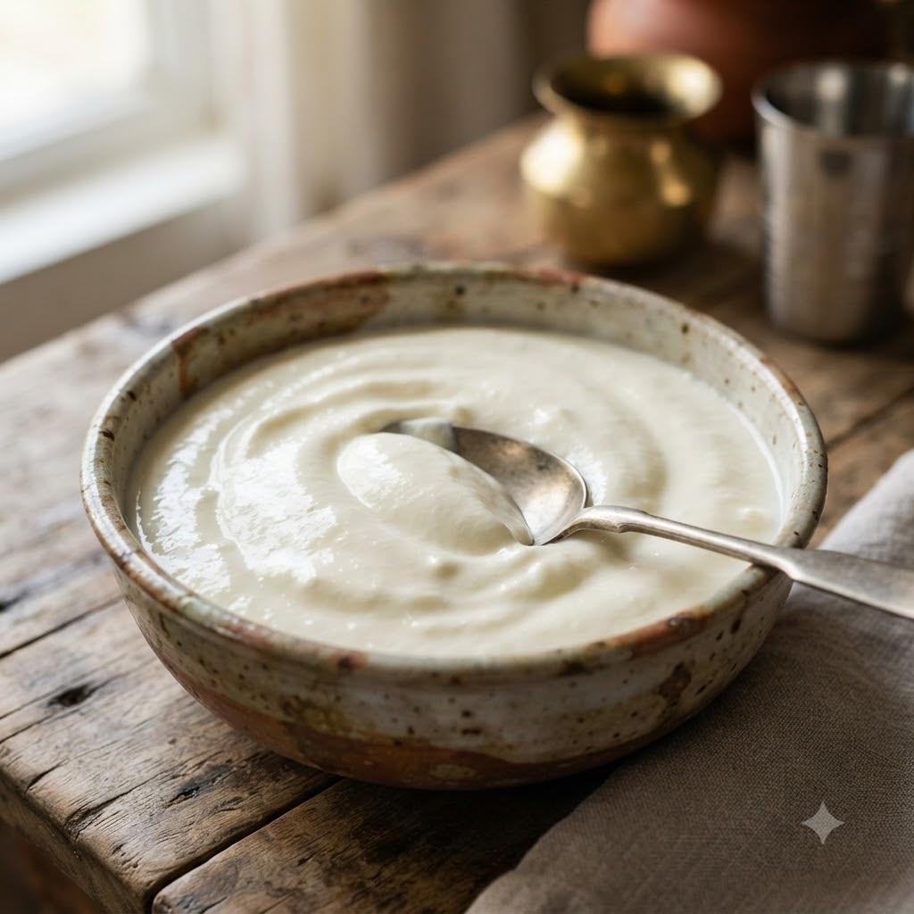

Homemade Curd (Dahi)

Homemade Curd (Dahi)
No-Cook (Chef Magic Warm optional) — 10 min + set overnight makes ~4 cups
Gluten-Free • Vegetarian • Gut-Friendly • Probiotic • No-Cook • Everyday
Prep ahead: The milk should be lukewarm (not hot) when the starter culture is added, or the culture will die.
Ingredients
- 4 cups full-fat milk, boiled and cooled to lukewarm
- 2 tbsp fresh curd (as starter culture)
Method
1Whisk the starter curd until smooth, then stir it into the lukewarm milk.
2Pour into a clean container with a lid.
3Leave undisturbed in a warm spot for 6–8 hours, or overnight, until fully set.
4Chill for at least 1 hour before serving; use a spoonful as the starter for your next batch.
Tip: A warm oven with just the light on, or wrapping the container in a towel, helps curd set faster in cold weather.